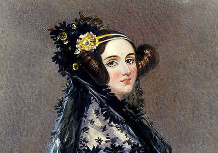

Ada Lovelace
Augusta Ada King, condessa de Lovelace, nasceu em Londres em 1815. Mais conhecida como Ada Lovelace, foi a primeira pessoa a escrever um algoritmo para ser processado por uma máquina na história da computação.
Infância
Seu pai era o poeta romântico Lord Byron, conhecido por seus exageros como ter um urso domesticado em seu quarto e por atos incomuns para a época, como se relacionar com homens e mulheres.
Lord Byron bebia demais, o que resultou no divórcio quando Ada tinha só 5 semanas de vida...
Ada era fascinada por matemática e poesia (para desespero de sua mãe)...

Juventude
Aos 17 anos, Ada foi apresentada à corte e passou a ser convidada para festas...
Charles gostou da jovem, ela era uma das poucas pessoas que se interessou e entendeu suas invenções...
Vida adulta
Charles era viúvo e lutava por investimentos...
Tempos depois, Charles criou o Engenho Analítico...
Enquanto Ada traduzia o conteúdo, fazia anotações por conta própria...
Charles queria que a máquina resolvesse problemas matemáticos...